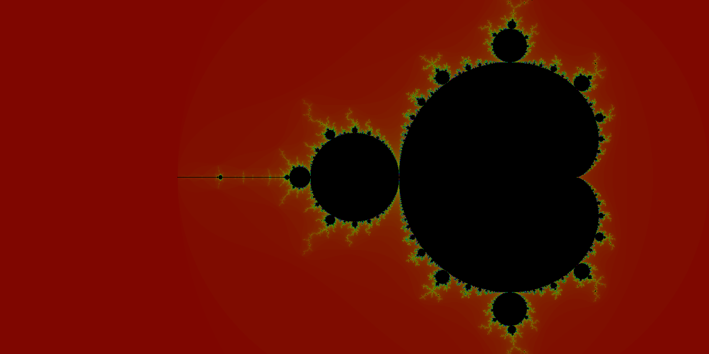
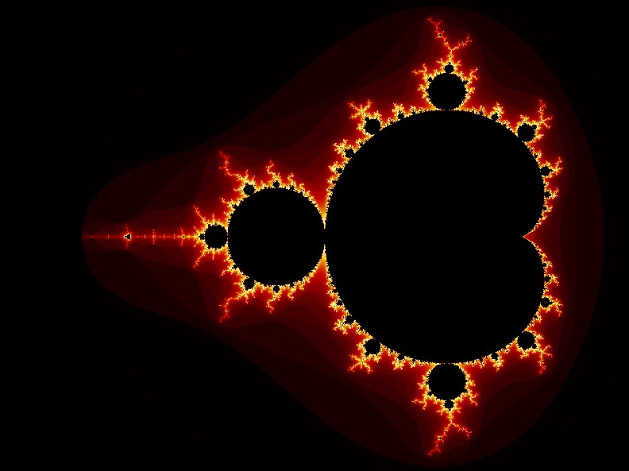
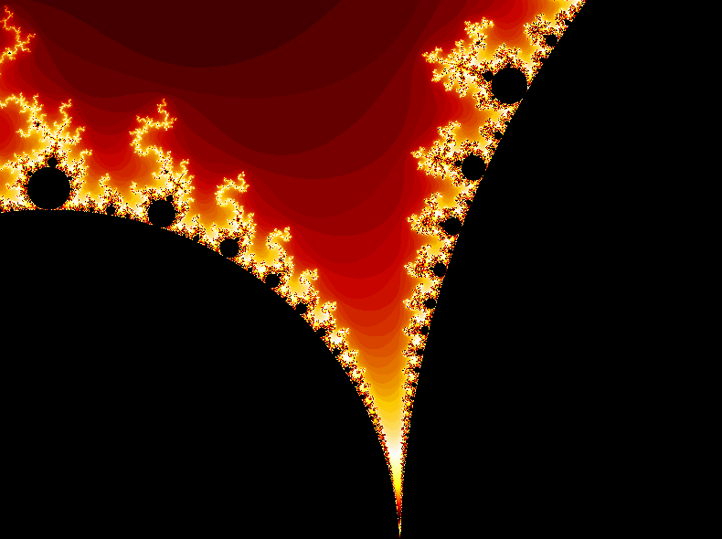

The Theory
The Mandelbrot Set, named after mathematician Benoit B. Mandelbrot and defined as the set of values of c in the complex plane for which the orbit of 0 under iteration of the quadratic map \(z_{n+1} = z_{n}^{2}+c\) remains bounded. Thus, a complex number c is a member of the Mandelbrot set if, when starting with \(z_{0} = 0\) and applying the iteration repeatedly, the absolute value of \(z_{n}\) remains bounded for all \(n\gt0\). While the mathematic intricacies are interesting, they are out of the scope of this article and you can read more about them here.
From Math to the Computer Screen
The math itself is extremely cool, but perhaps the coolest thing about fractals is the hypnotic infinite repetition of their small details. Because of this, I and many other programmers and mathematicians have always set out to find cool ways to use a computer to visualize these fractals. In perhaps one of the simplest ways, I accomplished this with Python and created this nice little image:

The issue with this however, is the lack of zooming capabilities or use of the GPU to decrease processing time. I wanted to be able to massively increase the time and quality of my render, so I looked to OpenGL to help me take advantage of the GPU. Rendering a 12k version of this image took roughly 40 minutes on my (fairly high performance) computer.
OpenGL Implementation
My biggest reasoning for writing this blog post is the lack of information for achieving this visualization using the Core Profile of OpenGL. While indeed there are many resources for creating a Mandelbrot Fractal in the Compatibility Profile of OpenGL, these were often outdated and taught practices that are no longer seen as the best in the Computer Graphics domain. While I do not claim to be a graphics professional in any way, I felt that it would be a great idea to outline these steps translated to the core profile. Because I did not come up with these myself, in fact I used one of the aforementioned resources, you can find that article post here by John Tsiombikas.
I would also like to note that I will not be covering the basics of OpenGL. Setting up the window, controlling the camera, buffers, etc. will be excluded and more information on the basics of OpenGL can be found below in the Additional Resources section.
Rendering a Quad and Texture Configuration
In order to render the fractal, we must have vertex data to pass into the graphics pipeline. We also will use a 1×256 palette texture to determine the color of every individual pixel. You can use this pre-defined vertex data or however you prefer to render a quad to the screen:
float vertices[] = {
1.0f, 1.0f, 0.0f, 1.0f, 1.0f, // top right
1.0f, -1.0f, 0.0f, 1.0f, 0.0f, // bottom right
-1.0f, -1.0f, 0.0f, 0.0f, 0.0f, // bottom left
-1.0f, 1.0f, 0.0f, 0.0f, 1.0f, // top left
};
unsigned int indices[] = {
0, 1, 3, // first Triangle
1, 2, 3 // second Triangle
};You'll also want to set up a texture for the shader. You can use this as the palette texture:
The Fragment and Vertex Shaders
While probably the most important part of this implementation, these shaders are rather simple. The vertex shader is about as barebones as it gets:
// fractal.vert
#version 330 core
layout (location = 0) in vec3 aPos;
layout (location = 1) in vec2 aTexCoord;
out vec2 TexCoord;
void main()
{
TexCoord = aTexCoord;
gl_Position = vec4(aPos, 1.0);
}The fragment shader is a bit more involved:
// fractal.frag
out vec4 FragColor;
in vec2 TexCoord;
uniform sampler2D texture1; // Palette Texture Sampler
uniform vec2 center; // Reference Center of the Complex plane
uniform float scale; // The zoom factor for scaling
uniform int iter; // The maximum number of iterations
void main()
{
vec2 z, c;
c.x = 1.3333 * (TexCoord.x - 0.5) * scale - center.x;
c.y = (TexCoord.y - 0.5) * scale - center.y;
int i;
z = c;
for (i = 0; i < iter; i++) {
float x = (z.x * z.x - z.y * z.y) + c.x;
float y = (z.y * z.x + z.x * z.y) + c.y;
if ((x * x + y * y) > 4.0) break;
z.x = x;
z.y = y;
}
FragColor = texture(texture1, vec2((i == iter ? 0.0 : float(i)) / 100.0), 1);
}Results
This implementation produces exactly the results I was seeking. The quality is optimal and the time complexity is negligible compared to the CPU approach.
Here is the fractal in its entirety — note the improvements to resolution and aesthetic:

And a zoomed-in view of what mathematicians call "Seahorse Valley":

I hope you enjoyed this article — feel free to reach out if you have questions about getting this working. Additional resources are linked below.
Additional Resources
- LearnOpenGL — an excellent resource for understanding the OpenGL Core Profile
- Wolfram MathWorld — article on the Mandelbrot set and its mathematics
- John Tsiombikas — the article this implementation was referenced from